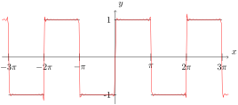

Section6.4Approximation by Trigonometric Polynomials
Consider a periodic function \(f\) of period \(2\pi\) on the interval \([-\pi,\pi]\text{.}\) The \(N\)th partial sum of the Fourier Series of \(f\) is denoted \(f_N\text{,}\)
where \(a_0,
a_n\) and \(b_n\) are the Fourier Coefficients as before. The function \(f_N\) is also called the Trigonometric Polynomial of degree \(n\). \index{trigonometry polynomial}
Let’s ask a question about approximation. Consider a function of the form:
What is the best approximate for a trigonometric polynomial to another function \(F(x)\text{.}\) That is, what coefficients can be chosen \(A_0, A_n, B_n\text{?}\)
To answer this question, we will need to know what error we are taking about. Typically the error will be some function of the two functions, called \(E(f,g)\) that outputs a number. We would like the error to have the following properties:
Graph the square wave function and \(f_{9}(x)\text{,}\) the \(9\)th degree trigonometric polynomial.
Solution.
Figure6.4.5.Find a point on a line that minimizes distance
And in contrast to the previous example, the trigonometric polynomial \(f_9(x)\) and the original function \(f\) are quite different.
We will explore this example in a bit more detail after seeing some important theorems.
Subsection6.4.1Theorems Related to Fourier Series
Theorem6.4.6.
The quantity \(||F-F_N||^2\) on the interval \([-\pi,\pi]\) is the minimum if and only if the coefficients of \(F_N\) in (2) ar the Fourier coefficients of \(F\text{.}\) This minimum value is
There are two important consequences of this theorem:
If the integral on the right side is finite, then the series on the left converges. Functions in which the right side is finite are piecewise continuous functions.
The error, \(E^{\star}\) in ((6.4.1)) goes to zero. That is Fourier Series converge to \(f\) (using the square error).
Example6.4.9.
Calculate \(E^{\star}\) for the function:
\begin{equation*}
f(x) = \begin{cases}
\pi+x \amp x \in [-\pi,0) \\
\pi-x \amp x \in [0,\pi]
\end{cases}
\end{equation*}
and extended periodically and let \(N=5,10,25,50,100,250,500,1000\text{.}\)
A consequence of Parseval’s Theorem is that for piecewise continuous functions, the Fourier Series converges as \(n \rightarrow \infty\text{.}\) So in light of the plot in Example Example 6.4.4, that it would appear that the plot of \(f_N\) would approach the square wave as \(N \rightarrow \infty\text{.}\) However the plots of \(f_{25}\) and \(f_{100}\) are shown below (with \(n=25\) on top):
Figure6.4.11.A square wave?????

Figure6.4.12.A square wave?????
And despite the larger value of \(N\text{,}\)\(f_N\) does not appear to be approaching the square wave function. The difference is pronounced near the discontinuities in the function. This is called \emph{Gibbs Phenomena} and it can be shown in this situation that the local max near \(x=0\) in fact grows without bound as \(N \rightarrow \infty\text{,}\) despite the fact that \(||f_N-f|| \rightarrow 0\text{.}\)